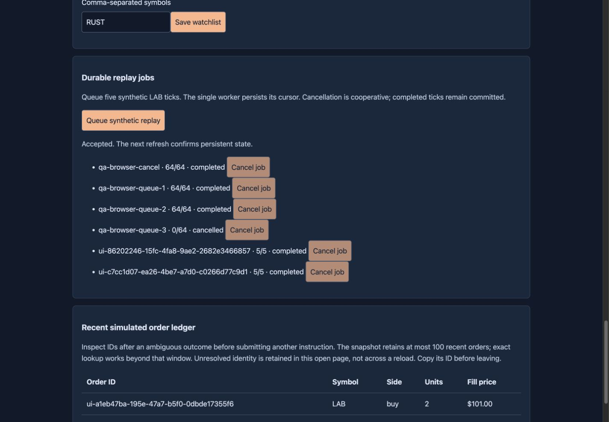
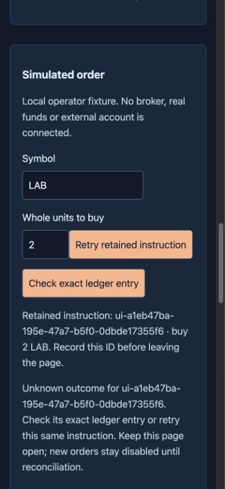
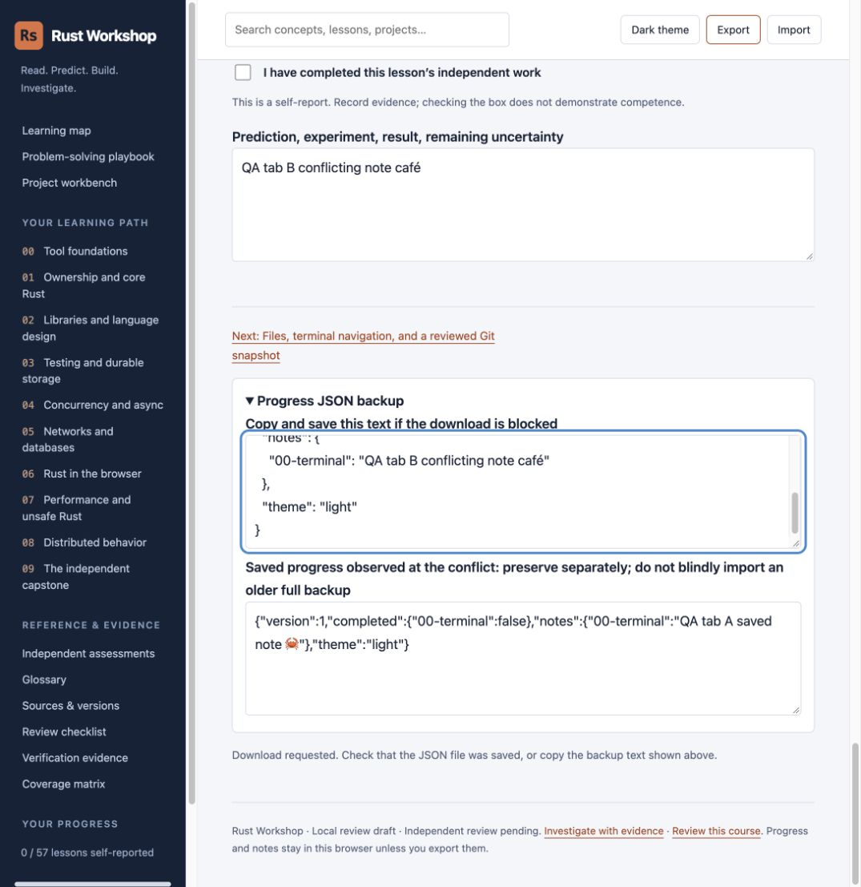
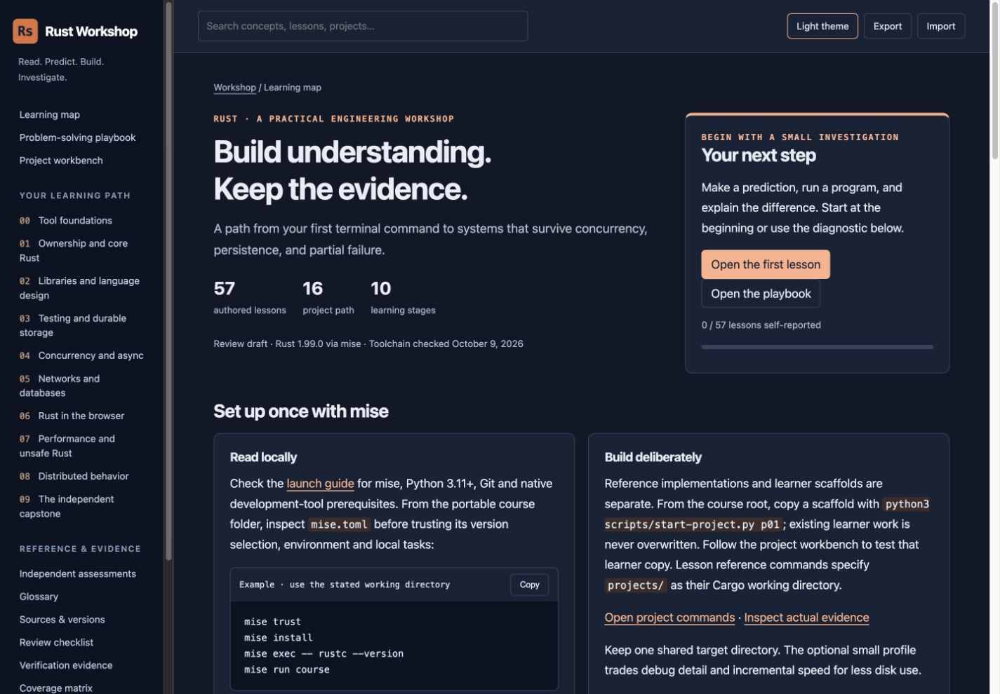
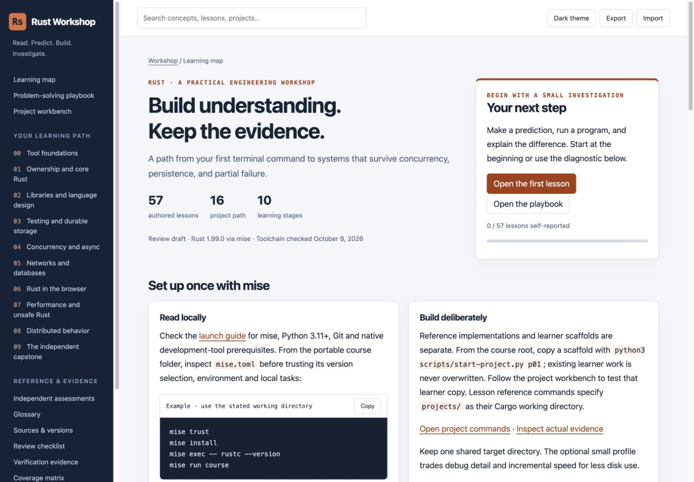
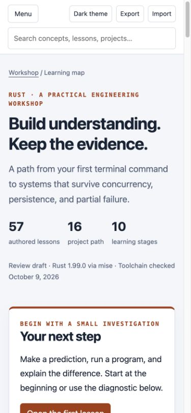
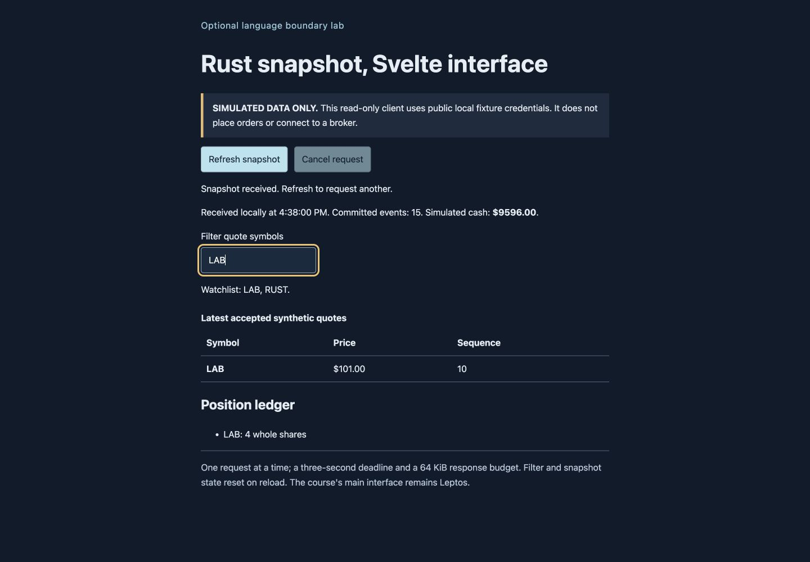
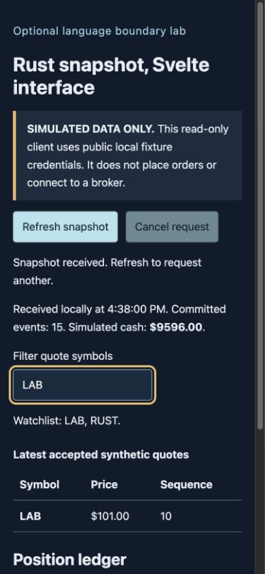

Live Chrome verification: reader and both clients
9 October 2026. Localhost access is working. The earlier permission block is historical. Author testing exercised the reader, compiled Leptos console and optional Svelte bridge with an owned synthetic backend journal. Independent acceptance remains pending.
Observed behavior and corrections
- reader desktop: 1440x1000 learning map and lesson controls inspected in Chrome.
- reader narrow: 390x844 learning map, menu opening, focus transfer and Escape closing inspected.
- theme: Dark theme rendered and survived reload; restored light theme.
- search: Matching and no-match results; ArrowDown focuses result. Fixed Escape from a result, then verified it clears results and returns search focus after cache-bypassing reload.
- clipboard: Copy code returned the exact four setup commands; prior clipboard was empty and was restored to empty.
- notes: Unicode multiline note and completion survived reload. Original empty notes and completion restored afterward.
- stale tab: A completed tab-A save refused a stale tab-B write. Export displayed both distinct versions; reloading recovered tab A.
- export fallback: Export displayed valid JSON and conflict recovery fields. Download completion could not be confirmed by the download-event tool.
- disclosure: Worked solution opened through UI. All four collapsed details expanded in print and were collapsed again after printing.
- print: Chrome Page.printToPDF rendered a six-page letter-sized lesson. All six page PNGs inspected: readable source, no overlap/clipping, sidebar and interactive controls omitted.
- rust load and empty: WASM loaded. Offline HTTP502 then automatic reconnect to owned fresh backend; zero-event/empty-quote state rendered.
- rust order: Missing quote rejected without commit. Replay created LAB quotes; buy two LAB accepted and appeared in ledger/holdings.
- rust refresh: Pause/resume, no-match filter, watchlist update and persisted history values exercised.
- rust uncertain: Stopped owned backend, submitted synthetic buy, observed retained ID and locked inputs. Restarted same journal, exact lookup404 kept identity, retry accepted same ID; ledger showed one fill for it.
- rust cancellation: Initial short fixture completed before cancellation. A later queued job qa-browser-queue-3 was cancelled from its row and visibly persisted as 0/64 cancelled.
- rust terminal controls: Completed jobs initially offered Cancel and returned422. Fixed button to disable for all nonactive states; final completed buttons observed disabled.
- rust history labels: Replaced Rust Some/None debug formatting with readable positions/no-records text; final rendered positions confirmed.
- rust narrow: 390x844 order form and ledger layout inspected; desktop1440x1000 inspected separately.
- svelte errors: Offline502 shown, refresh recovered after backend restart.
- svelte cancellation: Paused only the owned backend process, clicked refresh then Cancel request; prior snapshot remained with stale/cancelled status. Resumed backend and refreshed successfully.
- svelte layout filter: Desktop1440x1000 and narrow390x844 inspected; LAB and no-match filters exercised.
- runtime logs: Final captured error-level console logs empty for reader, Rust console and Svelte tab.
Remaining checks
Progress-file import and malformed-file rejection remain unverified: the extension file chooser requires Allow access to file URLs. The export download-event wait timed out, and browser URL policy rejected a direct chrome://downloads/ inspection. No workaround was attempted, so no completed-download claim is made; the visible JSON backup and separate conflict text were verified. User-visible notes and completion were restored to their original empty state. Synthetic service data stays in a separate test journal.
To enable file upload, open chrome://extensions, choose Details under the ChatGPT extension, and enable Allow access to file URLs. Extension instructions.
Review evidence
Exact checks and scope limits · Post-fix compilation and reader checks · Historical permission record · Six-page browser print specimen







